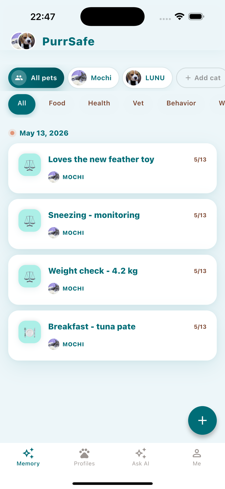
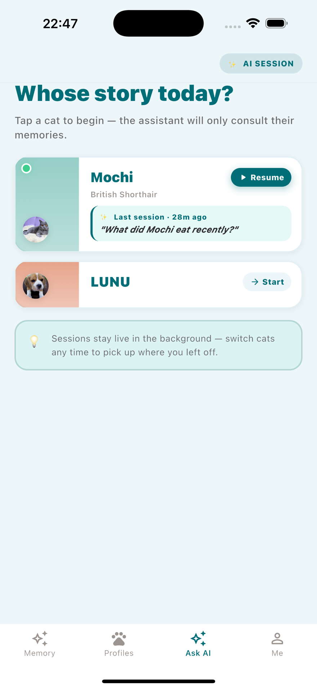
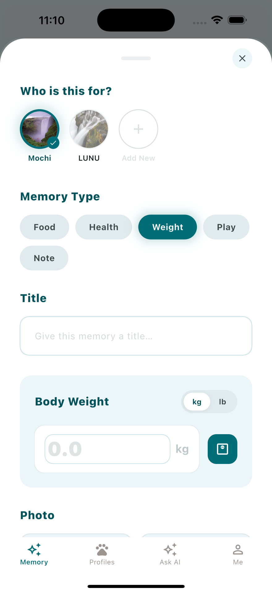
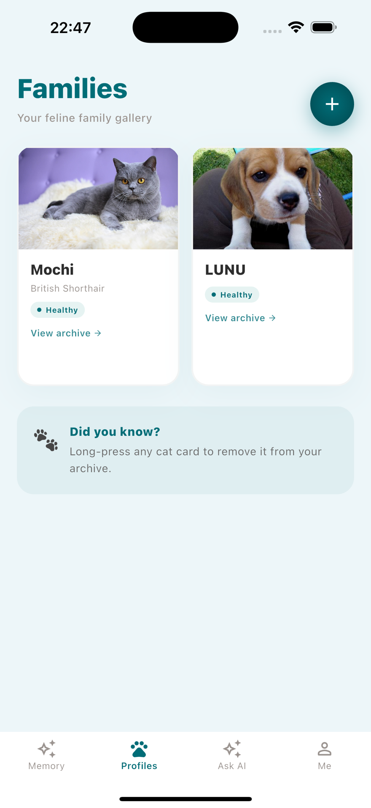

Uncropped. 10px bezel padding, 46px outer radius, 36px inner. The iOS status bar stays visible — it reads as authentic rather than as chrome we tried to hide.

Source: designs/project/uploads/03_ask_ai.png, 1320×2868 (6.7″ @3x), downscaled to 880×1912. No retouching.

Fixed 232px box at aspect-ratio: 232/300, object-fit: cover, object-position: top center.

Crops from the bottom only, so every screen's header and first rows survive. Never crop from the top.
Every screenshot is an unmodified capture from the PurrSafe iOS build in the Application project.
Do not recolour, redraw, or composite fabricated UI into them. Do not add testimonials, star ratings, or
download counts we cannot evidence. When the app UI changes, re-capture rather than edit.
Meaningful alt on every product screenshot; alt="" + aria-hidden on the decorative
rear hero device, because the front device already carries the meaning.
Ship webp with png fallback, loading="lazy" below the hero, and always set width/height.
Open: these captures contain a dog (LUNU, a beagle) while all copy says cat. Positioning call tracked in PUR-75.